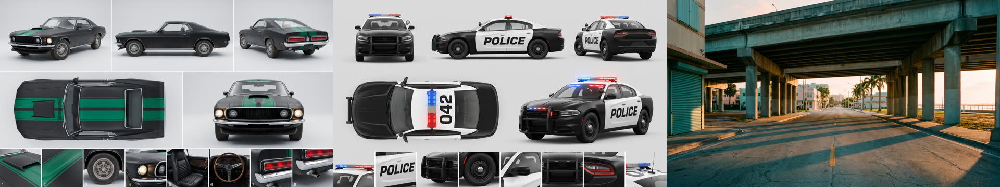
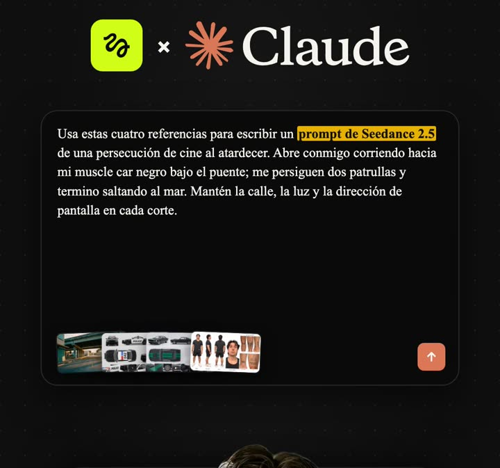
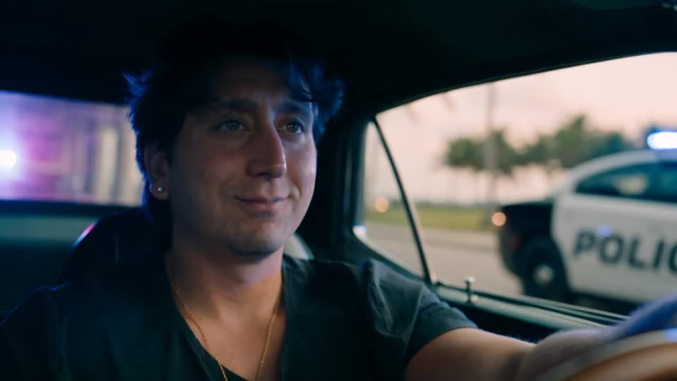
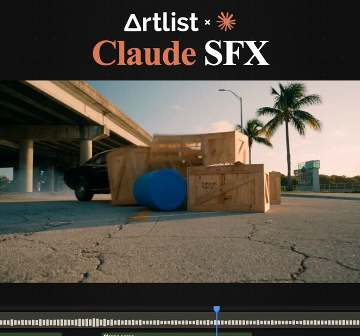
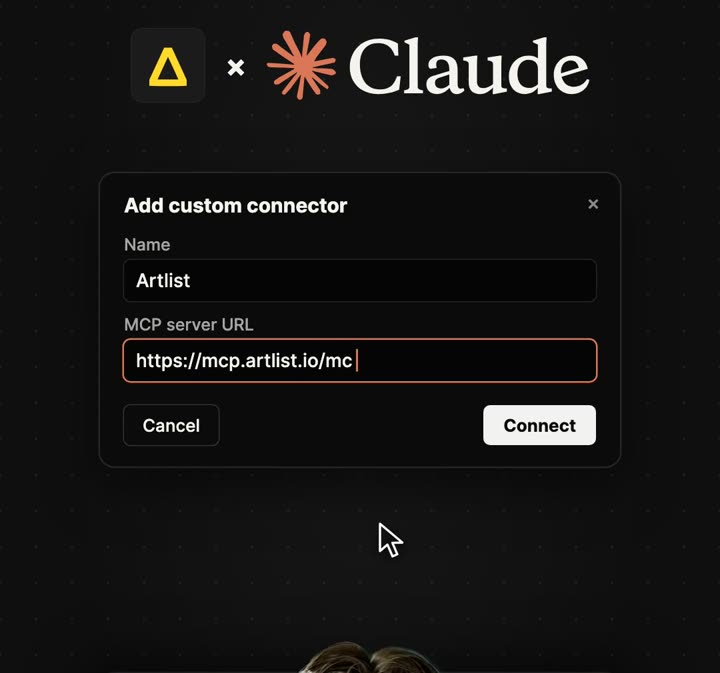
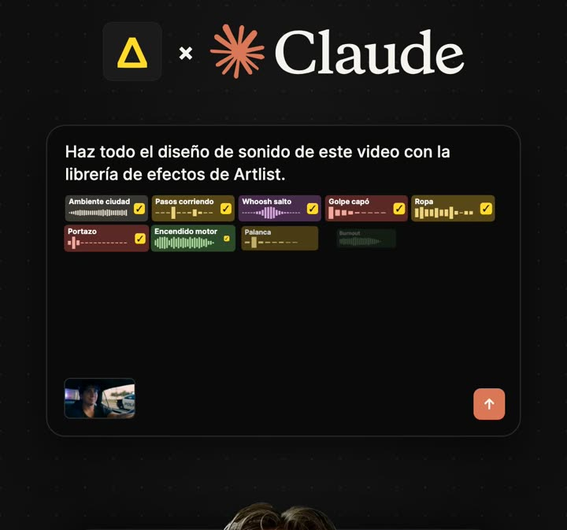

Claude SFX: que Claude le haga todo el diseño de sonido a tu video
Una película de acción de 15 segundos contigo de protagonista, hecha en Higgsfield con Seedance 2.5, y Claude poniéndole cada efecto de sonido en su sitio. Aquí está el paso a paso completo.
El video tiene dos partes. Primero una mini película: sales tú corriendo a un muscle car, te persiguen dos patrullas y terminas saltando al mar. Después el tutorial: le das a Claude tus ideas y tus imágenes de referencia, te escribe el prompt de Seedance 2.5, generas en Higgsfield, y Claude busca los efectos en una librería de sonido y los coloca uno por uno sobre el video. En el reel se ve el timeline llenándose mientras suena.
Herramientas
Claude Code
Escribe el prompt, busca y coloca los sonidos, corta tu grabación y arma toda la edición.
Instalar Claude Code →Higgsfield
Donde se generan las hojas de referencia y la película con Seedance 2.5. También trae buscador de efectos de sonido.
Abrir Higgsfield →Repos para descargar
remotion-dev/remotion
El motor de la edición: timeline animado, tarjetas de interfaz y presentador.
npx create-video@latest
Rikorose/DeepFilterNet
Aísla la voz y quita el ruido.
pip install deepfilternet
fgnt/nara_wpe
Quita el eco del cuarto de la voz (dereverberación).
pip install nara_wpe
SYSTRAN/faster-whisper
Transcribe palabra por palabra para elegir tomas y sincronizar los gráficos.
pip install faster-whisper
01Haz tus hojas de referencia
Seedance mantiene mejor a tu personaje, tu carro y tu calle si le das una hoja de cada cosa. Nosotros usamos cuatro: el character sheet de Kevin, el carro, las patrullas y la calle.

Vehicle reference sheet on a clean light-grey studio background, photoreal automotive photography. One fictional [TU VEHÍCULO, ej. 1970s American muscle coupe] with no brand badges: [COLOR Y DETALLES, ej. matte black body, two emerald-green racing stripes, raised hood scoop, chrome bumpers]. Layout: top row three large views (front three-quarter, pure side profile, rear three-quarter); middle row two views (top-down and low front view with headlights on); bottom row a strip of eight small detail squares. Even soft studio light, consistent car in every view, no text labels, no logos.
Photoreal location still, eye-level wide shot, 24mm look. [TU LOCACIÓN, ej. an empty city street running underneath a massive concrete highway overpass in a tropical coastal city at golden hour]. [LUZ, ej. low warm sun raking in from the right, long hard shadows, teal shade under the concrete, light haze]. No people, no vehicles, no readable signs. Cinematic film still, fine grain.
02Pídele a Claude el prompt de Seedance 2.5
Sube tus ideas y tus referencias a Claude y pídele un prompt con cortes por segundo. Este es el que usamos, completo. Las cuatro imágenes van como referencias en este orden: tú, el carro, las patrullas y la calle.

SCENE CONTEXT A 15-second high-octane getaway through a tropical coastal city at golden hour. [TU NOMBRE] sprints to his parked muscle car under a concrete highway overpass, launches it down the street with two police cruisers chasing, and sends it off the end of a waterfront road into the bay, leaping clear in mid-air. ACTIVE REFERENCES @image1 = [TU NOMBRE]: man in his late twenties, sturdy build, wavy dark brown medium-length hair with curtain bangs, hazel-green eyes, light stubble, diamond stud earrings, thin gold chain, black t-shirt, black shorts, white high-top sneakers with an orange swoosh, black watch on the left wrist. Face and body 100% match the reference. Reference only, never a start frame. @image2 = [TU NOMBRE]'S CAR: 1970s matte-black muscle coupe with two emerald-green racing stripes over the hood, roof and trunk, raised hood scoop, chrome bumpers. 100% matches the reference. @image3 = THE POLICE CARS: black-and-white police sedans, white doors with the word POLICE, red-and-blue roof light bars flashing. 100% match the reference. @image4 = THE STREET: the road under the concrete overpass with round pillars, turquoise shutter shop on the left, palms and the bay in the bright distance. Layout, light and screen direction 100% match the reference. LOCATION MAP Foreground: cracked asphalt with a faded yellow center line and long pillar shadows. Midground: the black car parked at the right curb under the overpass, nose pointing away from camera toward the bright end of the street. Background: palms, pastel buildings and a waterfront guardrail 200 meters down the road where the street ends at the bay. The sun sits low on the right; teal shade under the concrete. FIRST FRAME / BLOCKING Wide low frame under the overpass. [TU NOMBRE] is already mid-sprint from frame left toward the car at frame right, arms pumping, the car large in the right third. Everyone and everything is in motion from frame one. FORMAT MODE Timed multishot, 7 shots, HARD CUTs only at the stated seconds, the camera does not cut on its own. OPTICS Anamorphic prime character throughout: oval bokeh, long horizontal amber flares off the low sun, real motion blur. Shot 1: WS 84°. Shot 2: MCU 47°. Shot 3: ECU 12°. Shot 4: WS 63°. Shot 5: MCU 47°. Shot 6: WS 84°. Shot 7: WS 63°. No drift mid-segment. CAMERA A physical stunt-film camera on the shadow side of the action: low to the ground on a fast tracking vehicle, hard buffeting shake at speed, focus snapping to [TU NOMBRE] or the car. Rich tonal latitude, soft highlight roll-off into the sun, deep clean shadows. ACTION 0.0s to 2.0s — Shot 1. Low wide tracking shot 30 cm above the asphalt moving right at 15 km/h. [TU NOMBRE] sprints at 20 km/h to the car, plants one hand on the hood and slides across it on his hip, shoes scraping the paint, landing at the driver door. 2.0s HARD CUT 2.0s to 3.5s — Shot 2. From the passenger seat. [TU NOMBRE] drops into the black leather driver seat, yanks the heavy door shut with a slam, twists the ignition key, right hand grips the shifter; the whole cabin shudders as the engine catches. 3.5s HARD CUT 3.5s to 5.0s — Shot 3. Extreme close-up of the rear right wheel. The tyre spins in place, white smoke boiling off the rubber, grit spraying backward, then it bites and the car lunges out of frame to the right. 5.0s HARD CUT 5.0s to 8.0s — Shot 4. Wide tracking shot racing alongside the car at 110 km/h under the overpass, pillars strobing past in the foreground. Two police cruisers swing in behind it, light bars flashing red and blue, 20 meters back. The black car fishtails once and straightens. 8.0s HARD CUT 8.0s to 10.0s — Shot 5. Inside the cabin, camera on the dashboard facing [TU NOMBRE]. He checks the rear-view mirror, the corners of his mouth pull into a tight grin, he slams the shifter forward; red and blue light pulses across his face and the rear window. 10.0s HARD CUT 10.0s to 12.0s — Shot 6. Low wide shot at the end of the street. The car drifts sideways toward camera at 90 km/h, tyres smoking, and smashes through a stack of empty wooden crates and blue plastic water barrels; splinters and water burst outward across the lens. 12.0s HARD CUT 12.0s to 15.0s — Shot 7, slow motion. From beside the waterfront. The car bursts through the steel guardrail and flies off the end of the road over the bay, nose rising, wheels still spinning, guardrail fragments, dust and glass hanging in the air. [TU NOMBRE] pushes out of the open driver window and leaps clear, arms spread, hair and t-shirt whipping, the low sun flaring directly behind him. PERFORMANCE [TU NOMBRE] stays focused and enjoying it: jaw set while running, a short exhale as he lands in the seat, a tight confident grin in the mirror shot, eyes wide and mouth open in the final leap. Pore-level skin, sweat sheen on the forehead, living eyes with catch-lights from the low sun. PHYSICS The car has real mass: suspension squats on launch, body rolls in the drift, the rear steps out with inertia. Tyre smoke drifts with the wind. Crates splinter along the grain, water bursts in heavy droplets. Guardrail steel bends and tears outward. In slow motion every fragment follows its own arc and gravity. LIGHTING Golden hour, one low sun at 3200K from frame right, cutting between the pillars in hard warm shafts; teal bounce in the shade under the concrete; red and blue police light sweeping across metal and faces. Haze visible at 30 meters depth, tyre smoke catching the sun. AUDIO Silent picture, no music, no dialogue. STYLE Photoreal live-action stunt cinematography, saturated warm highlights against teal shadows, fine real film grain, real motion blur, natural lens imperfections. OUTPUT SETTINGS 16:9 full frame. Shots 1 to 6 in real time. Shot 7 in slow motion from start to finish. POSITIVE LOCKS [TU NOMBRE]'s face, hair, black t-shirt and gold chain stay identical to @image1 in every shot. The car stays matte black with two emerald-green stripes in every shot. Police cars stay black-and-white with flashing light bars. The street matches @image4. Screen direction stays left to right until the final leap. The only readable text in the whole clip is the word POLICE on the cruisers.
03Genera la película en Higgsfield
Seedance 2.5, modo con referencias, 15 segundos, 720p y sin audio (el sonido lo pone Claude después). A nosotros nos salió a la primera por 105 créditos.

04Que Claude haga el diseño de sonido
Claude mira la película plano por plano, busca cada efecto en la librería y lo coloca en su segundo exacto: pasos, portazo, motor, burnout, sirenas, radio policial, cajas, choque y cámara lenta. Fueron 28 sonidos.

Hazle todo el diseño de sonido a este video: [ruta/a/tu-video.mp4] 1. Míralo plano por plano y anota en qué segundo pasa cada cosa que suena. 2. Busca cada efecto en la librería de sonidos que tengo conectada y descarga el mejor de cada uno. 3. Colócalos en su segundo exacto, con fundidos cortos, y nivélalos: los golpes arriba, el ambiente abajo. 4. Entrégame el video con el sonido puesto y la lista de sonidos con sus tiempos.
05Conecta tu librería de sonidos a Claude
Para que Claude pueda buscar y bajar efectos por su cuenta necesita una librería conectada. En el video se muestra Artlist; nosotros usamos el buscador de efectos que ya trae Higgsfield conectado a Claude.

06Bonus: cómo editamos el reel
Kevin grabó el guion completo de una vez, repitiendo líneas. Claude transcribió todo, se quedó con la mejor toma de cada frase, quitó las pausas, aisló la voz, le quitó el eco y armó el formato: película arriba, timeline abajo y el presentador en una tarjeta con la cabeza saliendo del marco.

Quiero replicar este reel: [ruta/al/video-de-referencia.mp4] Mi grabación completa está aquí: [ruta/a/tu-grabacion.mp4] 1. Analiza la referencia: estructura, cortes, textos en pantalla y qué se ve en cada momento. 2. Transcribe mi grabación, quédate con la mejor toma de cada línea y corta las pausas (sin pedazos de menos de 0.6 s). 3. Aísla mi voz, quítale el eco y recórtame del fondo para que mi cabeza salga del marco. 4. Recrea cada escena de la referencia con mis herramientas y sus logos oficiales. 5. Respeta la zona segura de Reels y enséñame capturas de cada escena antes del render final.
Descargas
Kit del video
El proyecto de Remotion de este reel (timeline animado, tarjetas de Claude, Higgsfield y Artlist, cierre) + los scripts de cortes, mezcla de sonido y limpieza de voz + el prompt de Seedance. No incluye la película, la música ni los efectos: pon los tuyos en public/.